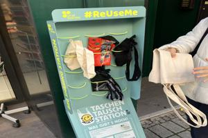
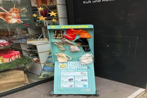
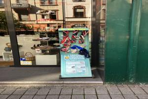

Bag Swap Station – Reuse me!
Join us in making Frankfurt waste-free.
Reuse bags and contribute to a greener city!
By participating in the Bag Swap Station Program, citizens are directly contributing to Frankfurt’s transformation into a waste-free city. Reusing bags reduces the demand for new bags, which cuts down the production of new materials and waste. The program also promotes responsible resource use, aligning with global sustainability goals. Additionally, sharing bags fosters a sense of community and encourages cooperation among citizens to achieve a common environmental goal.
The Bag Swap Station Program is a shining example of Frankfurt’s commitment to sustainability and waste reduction. By simply rethinking our bag usage and participating in this initiative, we can all contribute to making our city cleaner, greener, and more environmentally friendly.
-

21.11.2023
-

27.12.2023
-

29.09.2024